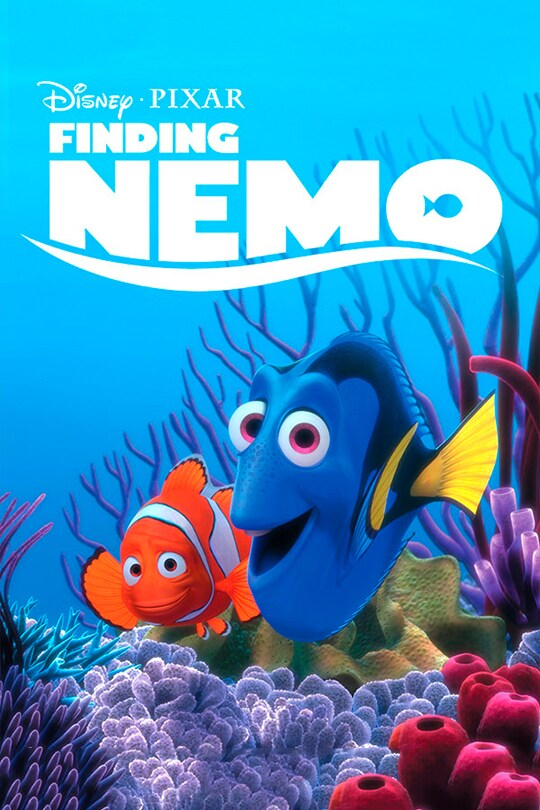

"Frozen" is known for its memorable songs, stunning animation, and a powerful message about the power of love and sisterhood.
|
"Toy Story" combines humor, heartwarming moments, and groundbreaking animation to create a timeless story about friendship and loyalty. |
|  |
"Finding Nemo" is a visually stunning film that teaches valuable lessons about family, bravery, and the beauty of the ocean. |
|
|
"Frozen" is known for its memorable songs, stunning animation, and a powerful message about the power of love and sisterhood. |